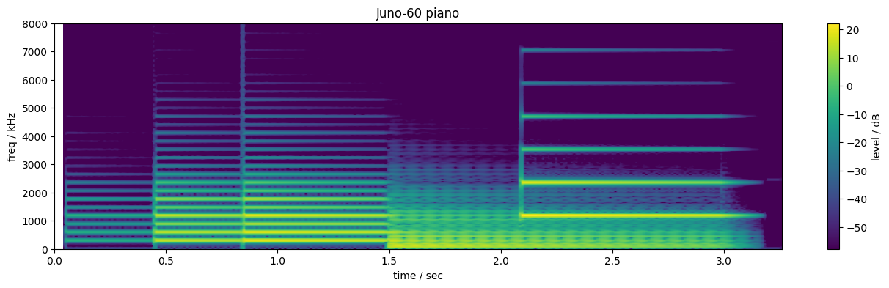

Discord
Join the shore pine sound systems Discord to chat about Tulip, AMY and Alles. A fun small community!
Stuff goes here TBD
Stuff

If you have a Tulip or want to try Tulip on the web, you can play with AMY live with a MIDI device..
DAn Ellis - dan.ellis@gmail.com
Join the shore pine sound systems Discord to chat about Tulip, AMY and Alles. A fun small community!
We'll send you very rare updates about Tulip, Alles, AMY and other projects we're working on.